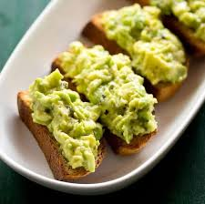

Avocado Toast

Description
Avocado toast is super easy to make, it’s healthy and satisfying, and it’s a blank canvas for flavorful seasonal toppings.
Ingredients
- 1 ripe avocado
- 2 slices of bread (whole grain, sourdough, or your favorite type)
- 1 tablespoon lemon or lime juice
- Salt and pepper to taste
- Optional toppings: cherry tomatoes, red pepper flakes, olive oil,
fresh herbs (e.g., cilantro or parsley)
Steps
-
Toast the Bread
-
Toast the slices of bread to your
desired level of crispiness.
-
Prepare the Avocado
-
Cut the avocado in half, remove the pit,
and scoop the flesh into a bowl.
-
Add the lemon or lime juice, salt, and pepper to the avocado.
Mash everything together with a fork until you reach
your desired consistency (smooth or chunky).
-
Assemble the Avocado Toast
-
Spread the mashed avocado evenly over the
toasted bread slices.
-
Add Optional Toppings
-
Add any optional toppings you like, such as halved
cherry tomatoes, a sprinkle of red pepper flakes,
a drizzle of olive oil, or some fresh herbs.
-
Serve
-
Serve immediately and enjoy your simple and
tasty Avocado Toast!